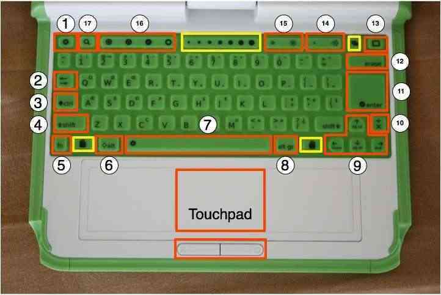

| De l'énergie pour votre XO | Index | Ecran et haut-parleurs |

Le clavier et le pavé tactile - qui sont résistants à l'eau et à la poussière - possèdent des touches spéciales pour des fonctions additionelles. Notez que le clavier est adapté, lors de son déploiement, aux langues principales du pays concerné. Votre clavier ne sera donc peut-être pas tout à fait comme celui indiqué sur l'image. Les touches entourées de jaune sont réservées pour de futures possibilités (comme des clés de saisie ou des barres de glissement).
1 Touche échappement (esc)
Elle est représentée par le symbole x sur un rond noir. Elle est communément utilisée en combinaison avec la touche Contrôle afin de quitter une activité (ctrl + esc)
2 Touche tabulation
Elle est représentée par des flèches qui pointent à droite et à gauche. Elle est - en plus de son usage standard - utilisée en combinaison avec les touches contrôle, shift et alt pour naviguer parmi les Activités ouvertes. Par exemple, alt + tab permet passer à l'Activité suivante.
3 Touche contrôle
La touche contrôle est utilisée en combinaison avec d'autres touches pour indiquer des commandes. Par exemple, ctrl + C est utilisée pour copier le presse-papiers; ctrl + v est utilisée pour coller à partir du presse-papiers.
4 Touche majuscule (shift)
La touche majuscule est utilisée en combinaison avec d'autres touches comme modificateur, la plupart du temps pour passer de minuscule à majuscule pour les alphabets latins.
5 Touche Fn
La touche Fonction (Fn) est utilisée en combinaison avec d'autres touches en tant que modificateur. Par exemple, fn + erase signifie effacer. fn + up arrow (flèche supérieure) signifie haut de page.
6 Touche Alt
La touche Alt est utilisée en combinaison avec d'autres touches pour éditer des commandes. Par exemple, alt + enter (entrée) amène au mode plein écran; alt + spacebar (barre d'espacement) amène à une visibilité du plateau. Cet exemple fonctionne dans l'Activité Naviguer mais pas dans l'Activité Enregistrement.
7 Barre d'espacement
La touche Barre d'espacement fait un espace. À l'avenir, lorsque vous l'utiliserez avec la touche Fn, cela vous permettra, en principe, de voir le code source de l'Activité en cours.
8 Touche Alt Gr
La touche alt graphics est utilisée en combinaison avec d'autres touches comme modificateur - habituellement pour sélectionner une lettre alternative ou générer un caractère accentué. Les détails de cette fonctionnalité dépendent de l'emplacement de la touche sur le clavier : par exemple, sur le clavier américain, alt gr + j amène au sigle "Euro"; mais en tapant le caractère "a" suivi de alt gr + 4, cela génère un "à".
9 Touches Flèche
Les touches Flèche sont utilisées pour la navigation ; combinées avec la touche Fonction (Fn), elles sont utilisées pour monter et descendre sur une page, ou pour revenir au début ou aller à la fin d'une page.
10 Touche Langage
La touche Langage se trouve sur des configurations clavier combinant des écritures latines et non-latines. Elle permet de basculer entre différents systèmes d'écriture, par exemple lorsque quelqu'un désire passer de la saisie en anglais à la saisie en hindi en appuyant sur une simple touche (alors que sur les claviers latin, les touches de langage ont été remplacées par des touches x et ÷).
11 Touche Entrée
La touche Entrée - en plus de son usage courant - est utilisée en combinaison avec les touches de modification. Par exemple, alt + enter amène au mode Plein écran.
12 Touche Effacer
La touche Effacer supprime le caractère situé derrière le curseur. fn + erase supprime le caractère situé devant le curseur.
13 Touche Cadre
La touche Cadre bascule la présence du cadre sur l'écran. Le cadre est la bordure noire entourant l'écran qui contient la barre d'outils Activité, le presse-papiers, les connexions sans fil, le niveau de batterie, etc.
La touche Volume permet de baisser ou d'augmenter le volume sonore.
15 Contrôle de luminosité
La touche Luminosité permet de baisser ou d'augmenter le niveau de luminosité de l'écran. Pour l'éteindre totalement, faites sept à huit pressions sur la touche Luminosité.
16 Touches Vue
Les quatre touches Vue - de gauche à droite - vous emmènent à la Vue de voisinage, la Vue de Groupe, la Vue Accueil, ainsi qu'à la Vue Activités.
17 Touche Recherche
La touche Recherche vous emmène directement au Journal et place le curseur de texte dans la boîte Recherche.
| De l'énergie pour votre XO | Index | Ecran et haut-parleurs |